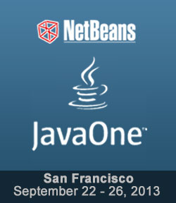
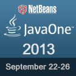
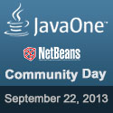

|  | Join members of the NetBeans
team, Java Champions, NetBeans Dream Team members, Java User
Group Leaders and fellow NetBeans community members at JavaOne 2013, the
destination to share best practices, proven solutions, code
samples, and demos that show how to apply Java technology to
real-world projects.
NetBeans Community Day 2013
Hilton San Francisco Union Square Get the Java Exhibition Hall floor plan and hours |
|
|
|
|
|
|
|
|
| TIME | TITLE | SPEAKERS |
| 08:30-09:30 |
CON3477: Apples and Oranges: The Highlights of Eclipse, IntelliJ IDEA and NetBeans IDE | Geertjan Wielenga, Max Andersen, Anton Arhipov |
| 08:30-09:30 | CON3638:10
Tips for Java EE 7 with PrimeFaces |
Martin
Fousek, Mert Caliskan |
| 12:30-14:30 |
TUT3869: Come
Together Right Now! Extending Swing Apps with JavaFX |
Paul Anderson, Gail Anderson |
| 15:00-16:00 |
CON7951: Developing
RESTful/OSGi Applications with Oracle Java Embedded Suite
on the Raspberry Pi |
Riaz
Aimandi |
| 15:00-16:00 |
CON3430: A
Year into the Life of Project Easel |
John "JB" Brock |
| 16:30-17:15 |
BOF4052: The
JavaFX and NetBeans Platform BOF |
Jim
Weaver, Sven Reimers, Anton Epple |
| 16:30-17:15 |
BOF3473: The
NetBeans Roadmap for Cutting-Edge Tooling for Cutting-Edge
Java |
John Ceccarelli, Ashwin Rao |
| 16:30-18:30 |
HOL2320: Git
on NetBeans: A Modern Version Control System on a
Productive IDE |
Brent
Beer, Matthew McCullough |
| 17:30-18:15 |
BOF4162: Fifteen
Lessons Learned from Fifteen Years of Quality Control |
Jiri Kovalsky, Thomas Kruse, Glenn Holmer |
| 20:30-21:15 |
BOF4040: NetBeans
Platform BOF |
Jaroslav
Tulach, Martin Klahn, Zoran Sevarac |
| 20:30-21:15 |
BOF3692: So
You Want to Be a Published Technical Author? |
Tinu Awopetu, Erol Staveley, Joel Murach |
| TIME | TITLE | SPEAKERS |
| 11:30-12:30 |
CON3530: Practical
Pros and Cons of Replacing Swing with JavaFX in Existing
Applications |
Geertjan Wielenga, Sean Phillips, Timon
Veenstra, Rob Terpilowski |
| 13:00-14:00 |
CON3475: Unlocking
the Java EE Platform with HTML5 |
Geertjan
Wielenga, David Heffelfinger, Johannes Weigend |
| 15:00-16:00 |
CON2364: Building
Rich Visual Tools in Java |
Jaroslav Tulach, Sven
Reimers, Zoran Sevarac |
| 16:30-17:15 |
BOF4085: Techniques
for Distributing Java Desktop Applications |
Jiri
Rechtacek, Peter Somol |
| 17:30-18:15 |
BOF2741: NetBeans
Dreamers: 10 Fun Ways to Make the Most of NetBeans |
Sven Reimers, John Yeary |
| 17:30-18:15 | BOF5517: Build
and Debug Your JavaFX Application for the iPad |
Oldrich
Maticka, David Pulkrabek |
| 17:30-18:15 | BOF3247: JavaFX
Deployment |
Jan Valenta |
| 18:30-19:15 |
BOF2764: Lessons
Learned from Using GlassFish with NetBeans |
Nathan
Howard, Mark Stephens |
| 19:30-21:30 | HOL2147: Java
EE 7 Hands-on Lab |
Arun Gupta, David Delabassee, Antonio
Goncalves, Marian Muller |
| 19:30-20:15 |
BOF3649: Java
Trends in Africa |
Tinuola
Awopetu, Lamine Ba, Jean-Francois "Max" Bonbhel |
| TIME | TITLE | SPEAKERS |
| 11:30-12:30 |
CON3078: The
Secret Society of Bug-Free Coding |
Ashwin Rao, Martin Entlicher |
| 12:30-14:30 |
HOL3970: Lambda
Programming Laboratory |
Stuart
Marks, Angela Caicedo, Simon Ritter, Maurice Naftalin |
| 13:00-14:00 |
CON3287: Coding
for Desktop and Mobile with HTML5 and Java EE 7 |
Petr Jiricka |
| 16:30-17:30 |
CON4171: Hitchhiker’s
Guide to the NetBeans Platform |
Geertjan
Wielenga, Eirik Bakke, Henry Arousell, Thomas Boqvist, Bruce
Schubert |
| TIME | TITLE | SPEAKERS |
| 14:00-15:00 |
CON7828: Red Hat and Oracle: Delivering on the Promise of Interoperability in Java EE 7 | Petr Jiricka, Max Andersen |
|  |  |
Place these logos on your blogs and websites
and help us promote NetBeans
at JavaOne! |